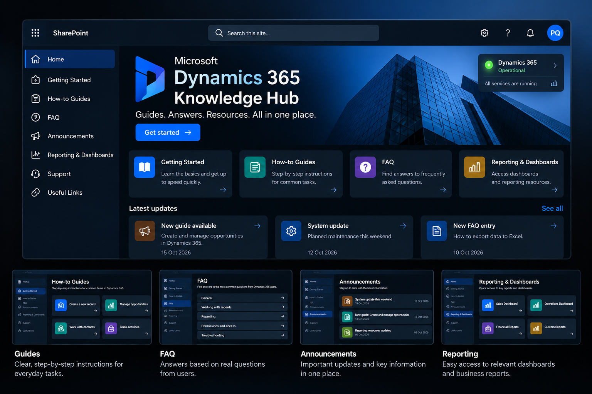

01
Quick guides
Step-by-step instructions for everyday Dynamics 365 tasks.
One place for users to find guidance, answers and business resources. Independently designed and built from concept to launch preparation.
Dynamics 365 users needed a clear way to find instructions, answers to common questions, system updates and reporting resources. I decided to bring these materials together in one structured SharePoint portal.
Asked users what they expected from a central knowledge resource and incorporated their suggestions into the solution.
Created the information structure, page layout and navigation to make key resources easier to find.
Created step-by-step instructions for common Dynamics 365 tasks and workflows.
Used questions raised by users to shape the FAQ around their actual needs, rather than assumptions.
Developed the portal's visual assets and brought announcements, support information and reporting links together.
The knowledge hub brings together guides, FAQs, announcements and key resources in one place, with a simple and intuitive structure.

Step-by-step instructions for everyday Dynamics 365 tasks.
Answers shaped by questions and feedback from users.
A central place for updates, important information and support resources.
Navigation to relevant Dynamics 365 and Power BI resources.
I've been using this tool for so long, but it's only thanks to you that I feel like I've really got to know it properly!
The goal is to give users a central source of guidance, support self-service learning and make business knowledge more accessible in everyday work.
The portal was prepared for publication at the time this case study was written. No measured adoption or efficiency results are claimed.
I gathered feedback, built the structure, created the content and developed the portal myself. The focus was on a useful solution shaped around what users actually needed.